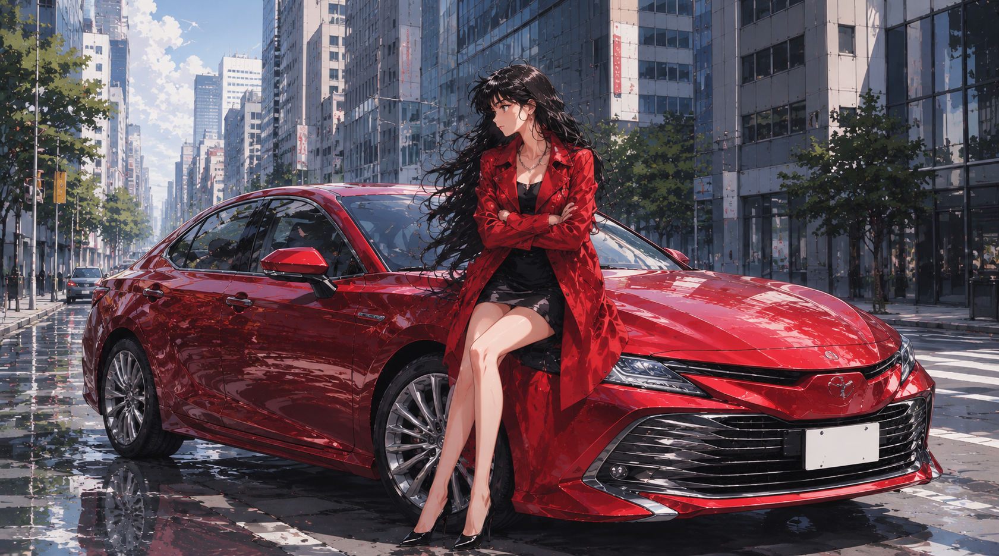

LOADING...
3D Driving Simulator
TITLE
1 MAP
2 CHARACTER
3 CAR
キャラクターを選択してください
戻る
OK
WASD：移動 / S一瞬+逆方向キー：ドリフト / マウス：視点 / Shift+W：加速 / Shift+S：強ブレーキ / Esc：ポーズ
はじまりの地
峠
Neo Metropolitan
レインボーロード
サーキット
レインボーロード2
セダン 1
セダン 2
セダン 3
セダン 4
セダン 5
セダン 6
SUV 1
SUV 2
SUV 3
ミニバン 1
ミニバン 2
ミニバン 3
ミニバン 4
スポーツカー 1
スポーツカー 2
スポーツカー 3
スポーツカー 4
コンパクトカー 1
コンパクトカー 2
コンパクトカー 3
軽自動車 1
軽自動車 2
軽自動車 3
中型トラック 1
中型トラック 2
中型トラック 3
中型トラック 4
大型トラック 1
大型トラック 2
大型トラック 3
大型トラック 4
ON（軽量）
OFF（最適化なし）
WASD：移動 / S一瞬+カーブ逆方向キー：ドリフト / マウス：視点 / Shift+W：急加速 / S：ブレーキ / Shift+S：強ブレーキ / 1・2：ウィンカー / Esc：ポーズ
👨
男子大生A
女の子にかっこいい所見せるぞ
BMW M3 G80 のFBXを読み込みます
自動読み込みに失敗した場合のみ、下のボタンから手動で読み込めます。
下のボタンから
assets/m3G50 フォルダ内の FBX と JPG/PNG
をまとめて選択してください。
FBX/JPGを選択
閉じる
BGMを読み込めませんでした
assets/bgm_selfcontrol.wav
が見つからない、またはブラウザが形式を拒否しています。
下のボタンから同じBGMファイルを手動選択すると再生できます。
BGMファイルを選択
閉じる
x1000 rpm
N
0
km/h
MAP
PAUSE
ゲームを一時停止中です
ゲームに戻る
タイトルへ戻る
3D Driving Simulator
loading...